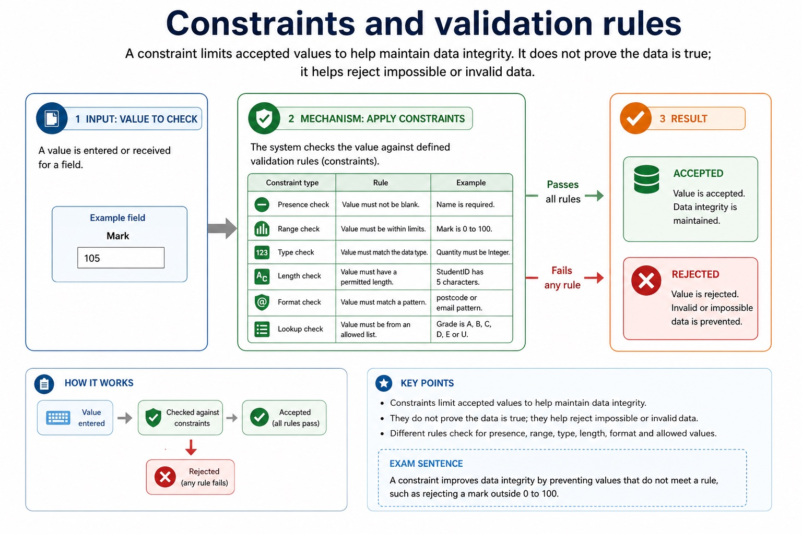
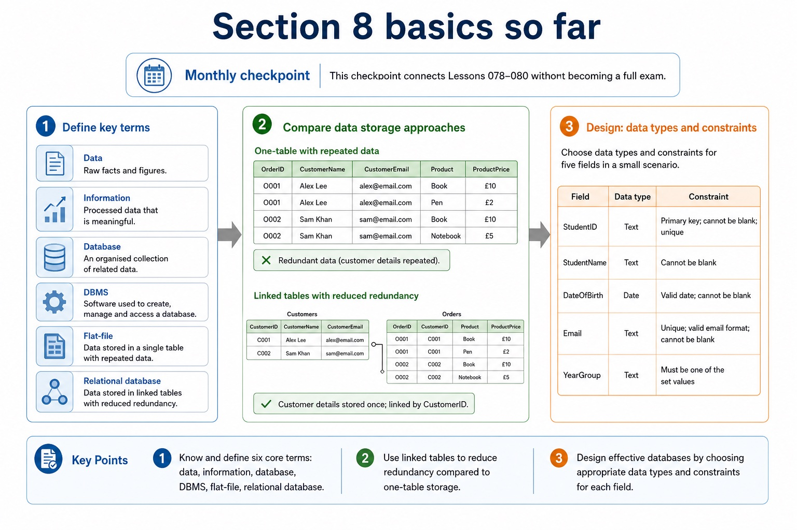

An entity-relationship (E-R) diagram documents a database design by showing the entities, their relevant attributes or keys, the relationships between entities and the relationship cardinality. Entity names should describe things about which the system stores multiple facts; attributes belong to the entity they describe.
To produce an E-R diagram, extract entity candidates from the scenario, assign identifiers, connect only supported relationships and label cardinality as one-to-one, one-to-many or many-to-many. Resolve a many-to-many relationship with a linking entity when converting the design to relational tables. A diagram must preserve the stated business rules rather than inventing links from similar field names.
1NF requires atomic values and no repeating groups. 2NF is 1NF with every non-key attribute dependent on the whole primary key, removing partial dependencies. 3NF is 2NF with no non-key attribute dependent on another non-key attribute, removing transitive dependencies.
Normalisation decomposes tables while preserving keys and relationships. A normalised 3NF design stores each fact once in the table identified by its determinant, reducing insertion, update and deletion anomalies.
A file-based approach can repeat facts in separate files, create inconsistent copies and isolate related data. A Database Management System (DBMS) addresses these file-based limitations by providing data management, including a data dictionary of metadata; data modelling; a logical schema; data integrity; and data security. Security includes backup procedures and access rights assigned to individual users or groups.
A developer interface provides tools used to define structures and build database applications, forms or reports. A query processor interprets and checks a query, chooses how to carry it out, accesses the stored data and returns or modifies the specified records while the DBMS applies access and integrity rules.
Worked example: Model students joining clubs / Order line data / Run a restricted query
Draw Student(StudentID, Name) and Club(ClubID, ClubName). Because each student may join many clubs and each club may contain many students, add Membership(StudentID, ClubID, JoinDate) as a linking entity. The completed design has Student 1:M Membership and Club 1:M Membership. ORDER_LINE(OrderID, ProductID, ProductName, Quantity) has composite key OrderID+ProductID. ProductName depends only on ProductID, so split PRODUCT(ProductID, ProductName) and ORDER_LINE(OrderID, ProductID, Quantity) to reach 2NF for that dependency. A developer enters a SELECT statement through the developer interface. The query processor checks the statement and the user's access rights, works out an execution plan, retrieves the permitted rows and returns the result. The data dictionary supplies definitions such as field types, keys and constraints; it does not hold the ordinary user records.
What does a DBMS provide?
What does a DBMS provide?: source-grounded visual explanation.
Lesson fact: A DBMS is software used to create, manage and control access to a database. It sits between users/applications and stored data.
Lesson fact: Data management stores, organises, retrieves and updates data; maintains metadata in a data dictionary.
Lesson fact: Data modelling helps define entities, tables, fields and the logical schema of the database.
Lesson fact: Data integrity enforces rules so values are valid and relationships remain consistent.
Lesson fact: Data security uses access rights for individuals or groups; supports backup and recovery procedures.
Lesson fact: Developer interface provides tools for creating structures, forms, reports or database applications.
Lesson fact: Query processor interprets and carries out queries so users can retrieve or change data.
Lesson fact: Exam sentence:
Lesson fact: The DBMS manages the database by controlling data definition, access, integrity, security and queries; the database is the organised data itself.
Core syllabus practice
E-R design, normalisation and DBMS features: apply and assess
Targeted practice
1. What four kinds of information should an E-R diagram communicate here?
Show answer
Entities, relevant attributes/keys, relationships and cardinality.
2. What relationship exists between one Customer and many Orders?
Show answer
One-to-many from Customer to Order.
3. Why add Membership between Student and Club?
Show answer
It resolves the many-to-many relationship into two one-to-many relationships.
4. Why is matching field spelling not enough to draw a relationship?
Show answer
The scenario/business rule must state or imply that the records are associated.
5. What does 1NF remove?
Show answer
Repeating groups and non-atomic/multiple values in one field.
6. What dependency violates 2NF?
Show answer
A non-key attribute depending on only part of a composite key.
7. What dependency violates 3NF?
Show answer
A non-key attribute depending on another non-key attribute.
8. What five broad DBMS feature areas are required?
Show answer
Data management including a data dictionary, data modelling, logical schema, data integrity, and data security including backup and access rights.
9. What does a data dictionary store?
Show answer
Metadata such as table, field, type, key and constraint definitions.
10. What is the purpose of a developer interface?
Show answer
To provide tools for defining structures or building database applications, forms and reports.
11. What is the role of the query processor?
Show answer
To interpret/check, plan and carry out database queries or data-maintenance statements.
12. Which DBMS feature limits users or groups to permitted operations?
Show answer
Access rights within data security.
Exam-style question
16 marks
A clinic stores Patients, Doctors and Appointments. Write an E-R design in words or a labelled diagram and state the two relationship cardinalities. Explain why CUSTOMER(CustomerID, Postcode, Town) may not be in 3NF when each postcode determines one town, and give a 3NF design. A school is introducing a relational DBMS. Explain four DBMS features and the distinct purposes of the developer interface and query processor.
Show MS
Answer
Guidance
Marks
identifies Patient, Doctor and Appointment as entities
Do not award a collection of unconnected entity boxes as a complete E-R design. Do not award decomposition marks unless primary/foreign-key linkage can reconstruct the relationship. Do not treat the database, data dictionary, developer interface and query processor as interchangeable names.
1
gives a suitable identifier/key for each entity
1
Patient has a one-to-many relationship with Appointment
1
Doctor has a one-to-many relationship with Appointment
1
Appointment carries the linking foreign keys / resolves the patient-doctor many-to-many history
1
attributes and relationship directions are consistent with the scenario
1
CustomerID determines Postcode and Postcode determines Town
1
Town is transitively dependent on CustomerID / depends on non-key Postcode
1
CUSTOMER(CustomerID, Postcode)
1
POSTCODE(Postcode, Town), with Postcode linked as foreign key
1
data management/data dictionary stores metadata about structure
1
data modelling or logical schema represents the database design
1
integrity rules maintain valid and consistent data
1
security uses access rights and backup procedures
1
developer interface supports defining structures or building database applications/forms/reports
1
query processor interprets/checks and carries out queries or maintenance statements
1
Lesson 080 | 45 minutes | Paper 1 Section 8 | 5-minute quiz and monthly checkpoint
A table is not just boxes. It is boxes with rules, otherwise the data starts doing parkour.
This lesson focuses on the inside of a database table: records, fields, data types, field sizes
and constraints. The aim is to design fields that store the right kind of data and reject values
that should not be accepted.
Labeltable, record/tuple, field/attribute and value
Selectappropriate data types and field sizes for scenario data
Applyconstraints and validation rules to protect data integrity
StudentIDNameDOBFeePaid
S0234Amira Chen2009-04-18TRUE
S0318Leo Singh2008-11-02FALSE
Fields are columns. Records are rows. Values live at the intersections.
Why this matters
Database design marks often come from precise choices: a date field for dates, Boolean for true/false, and a constraint with a clear purpose.
Common error
Do not choose Integer for phone numbers. You do not calculate with phone numbers, and leading zeroes may matter.
Warm-up hook
A school stores a phone number as Integer. What could go wrong?
The phone number is not trying to join a maths competition.
Choose the database design issue.
Knowledge point 1
Tables, records and fields
A table stores records about one entity. A record is one complete row. A field is one column or attribute.
Term
Meaning
Example
Table
A collection of records for one entity
Student table
Record / tuple
One complete row in a table
S0234, Amira Chen, 2009-04-18, TRUE
Field / attribute
One column or property stored for each record
StudentID, Name, DateOfBirth, FeePaid
Value
One item of data in a field for a record
TRUE in the FeePaid field
Tables, records and fields
Tables, records and fields: source-grounded visual explanation.
Lesson fact: A table stores records about one entity. A record is one complete row. A field is one column or attribute.
Lesson fact: A collection of records for one entity
Lesson fact: Student table
Lesson fact: Record / tuple
Lesson fact: One complete row in a table
Lesson fact: S0234, Amira Chen, 2009-04-18, TRUE
Lesson fact: Field / attribute
Lesson fact: One column or property stored for each record
Lesson fact: One item of data in a field for a record
Lesson fact: TRUE in the FeePaid field
Knowledge point 2
Designing fields properly
Each field should have a name, data type, possible field size and constraints. Good design reduces invalid data at entry.
Field nameClear and specific: DateOfBirth, not date.Data typeControls the kind of data: text, integer, real, date/time, Boolean.Field sizeMaximum storage length where relevant, such as 8 characters for StudentID.ConstraintA rule that a value must satisfy before it is accepted.
Chinese support: field = 字段/列；record = 记录/行；constraint = 约束/限制规则；data integrity = 数据完整性。
Lesson fact: Each field should have a name, data type, possible field size and constraints. Good design reduces invalid data at entry.
Lesson fact: Field name Clear and specific: DateOfBirth , not date .
Lesson fact: Data type Controls the kind of data: text, integer, real, date/time, Boolean.
Lesson fact: Field size Maximum storage length where relevant, such as 8 characters for StudentID.
Lesson fact: Constraint A rule that a value must satisfy before it is accepted.
Knowledge point 3
Common database data types
Data type
Use when
Example
Text / string
The value may contain letters, spaces, symbols or leading zeroes
PhoneNumber = "02071234567"
Integer
Whole number used for counting or arithmetic
Quantity = 24
Real / decimal
Number may include fractional part
MassKg = 62.5
Boolean
Only two logical states are needed
FeePaid = TRUE
Date/time
Date or time operations, ordering or validation are needed
AppointmentDate = 2026-06-15
Common database data types
Common database data types: source-grounded visual explanation.
Lesson fact: Data type
Lesson fact: Use when
Lesson fact: Text / string
Lesson fact: The value may contain letters, spaces, symbols or leading zeroes
Lesson fact: PhoneNumber = "02071234567"
Lesson fact: Whole number used for counting or arithmetic
Lesson fact: Quantity = 24
Lesson fact: Real / decimal
Lesson fact: Number may include fractional part
Lesson fact: MassKg = 62.5
Lesson fact: Only two logical states are needed
Lesson fact: FeePaid = TRUE
Knowledge point 4
Constraints and validation rules
A constraint limits accepted values to help maintain data integrity. It does not prove the data is true; it helps reject impossible or invalid data.
Presence checkValue must not be blank. Example: Name is required.Range checkValue must be within limits. Example: Mark is 0 to 100.Type checkValue must match the data type. Example: Quantity must be Integer.Length checkValue must have a permitted length. Example: StudentID has 5 characters.Format checkValue must match a pattern. Example: postcode or email pattern.Lookup checkValue must be from an allowed list. Example: Grade is A, B, C, D, E or U.
Exam sentence:A constraint improves data integrity by preventing values that do not meet a rule, such as rejecting a mark outside 0 to 100.
Constraints and validation rules

Constraints and validation rules: source-grounded visual explanation.
Lesson fact: A constraint limits accepted values to help maintain data integrity. It does not prove the data is true; it helps reject impossible or invalid data.
Lesson fact: Presence check Value must not be blank. Example: Name is required.
Lesson fact: Range check Value must be within limits. Example: Mark is 0 to 100.
Lesson fact: Type check Value must match the data type. Example: Quantity must be Integer.
Lesson fact: Length check Value must have a permitted length. Example: StudentID has 5 characters.
Lesson fact: Format check Value must match a pattern. Example: postcode or email pattern.
Lesson fact: Lookup check Value must be from an allowed list. Example: Grade is A, B, C, D, E or U.
Lesson fact: Exam sentence:
Lesson fact: A constraint improves data integrity by preventing values that do not meet a rule, such as rejecting a mark outside 0 to 100.
Interactive data type chooser
Choose the best data type
Choose a field, then decide the data type.
The best answer depends on how the value is used, not how numeric it looks.
Choose the best data type
Choose the best data type: source-grounded visual explanation.
Lesson fact: Interactive data type chooser
Lesson fact: Choose a field, then decide the data type.
Lesson fact: The best answer depends on how the value is used, not how numeric it looks.
Interactive constraint checker
Which rule rejects the bad value?
Choose a bad value to identify the check.
Name the rule and explain what it prevents.
Which rule rejects the bad value?
Which rule rejects the bad value?: source-grounded visual explanation.
Lesson fact: Interactive constraint checker
Lesson fact: Bad value
Lesson fact: Choose a bad value to identify the check.
Lesson fact: Name the rule and explain what it prevents.
Worked examples
Design fields that do not invite chaos
Practice with instant checking
5-minute quiz plus core checks
Answer quickly, then use Show answer to mark with strict vocabulary.
Monthly checkpoint
Section 8 basics so far
This checkpoint connects Lessons 078-080 without becoming a full exam.
1. Definedata, information, database, DBMS, flat-file, relational database.2. Compareone-table repeated data vs linked tables with reduced redundancy.3. Designchoose data types and constraints for five fields in a small scenario.
Section 8 basics so far

Section 8 basics so far: source-grounded visual explanation.
Lesson fact: Monthly checkpoint
Lesson fact: This checkpoint connects Lessons 078-080 without becoming a full exam.
Lesson fact: 2. Compare one-table repeated data vs linked tables with reduced redundancy.
Lesson fact: 3. Design choose data types and constraints for five fields in a small scenario.
Mistake debugging
Repair common field design errors
Exam-style questions
Original Cambridge-style practice with expandable MS
These are original questions written in Cambridge style. The mark schemes are strict about selecting and justifying types and constraints.
Summary
What to remember
StructureTable = collection of records; record = row; field = column.
TypesChoose the type based on use: text, integer, real, Boolean or date/time.
ConstraintsRules reject invalid values and help maintain data integrity.
Homework
Clear tasks for consolidation
Task 1: Field design tableFor fields StudentID, Name, DateOfBirth, PhoneNumber, ExamMark and FeePaid, give a suitable data type, field size if relevant, and one constraint.Task 2: Explain two choicesWrite two short paragraphs explaining why PhoneNumber should usually be text and why ExamMark should have a range check.Task 3: 6-mark answerAnswer: "Explain how suitable data types and constraints can improve data integrity in a school database." Use two fields as examples.